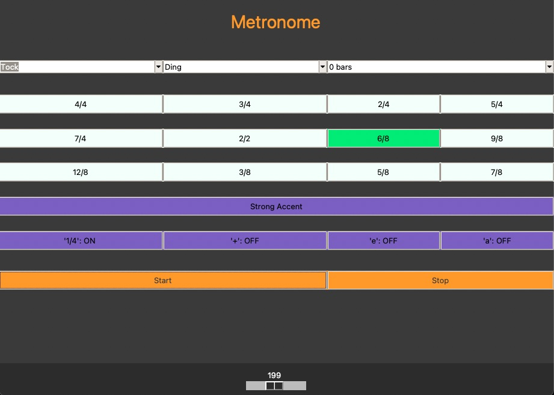

<section id="projects">
    <div class="container">
        <h2>Projects</h2>
        <div class="about-container">
            <div class="about-text">            
                <h3>Hatchmaps</h3>                
                <p>Developed a full-stack web application that aids fly fishers in selection of fly imitations on popular Oregon water-bodies.</p>
                <p>Uses a MapBox interactive map in conjunction with USGS water temperature data scraped with Puppeteer to create location specific insect life-cycle forecasts.</p>
                <p>Dockerized client and server files are hosted on an AWS EC2 instance with a SSL certificate from AWS certificate manager, while the MySQL database is managed separately on Amazon RDS.</p>
                <p>View at: https://hatchmaps.com, Github: https://github.com/rdallim2/hatchMaps</p>
            </div>
            
        </div>

        <div class="about-container">
            <div class="about-text">            
                <h3>Astrologger</h3>
                <p>Implemented a REST-ful Flas.k web application for user storage of astronomical observation logs, primarily to fulfill requirements of observation programs by the Astronomical League</p>
                <p>Features user sign-up and login authentication, AJAX data conversion (zip-code to coordinates, etc..), storage and retrieval of data, packaging of data to be submitted for Astronomical League programs.</p>
                <p>Dockerized client and server files follow restful principles for user-specific interactions.</p>
                <p>Github: https://github.com/rdallim2/AstroLogger</p>
            </div>
            
        </div>

        <div class="about-container">
            <div class="about-text">            
                <h3>Metronome</h3>
                <p>Designed and implemented a Metronome (Musicians timing practice device) for desktop using python, pygame and tKinter.</p>
                <p>Features core functionality of tempo-adjustment, time-signature-adjustment, sound options and time-gap creation through user input in a seamless, aesthetically pleasing user-interface.</p>
                <p>Version control managed with Git.</p>
            </div>
            
        </div>
    </div>
</section>